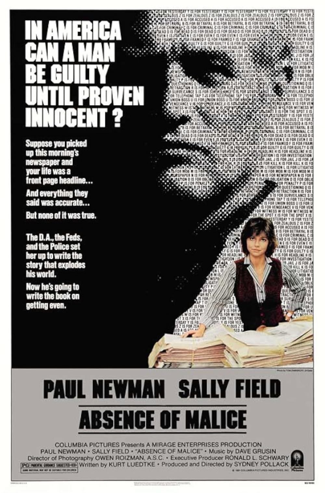

Absence of Malice
54th Academy Awards
(Oscars 1982)
3 Nominations, 0 Awards
| Watched |
| Nominations | ||
|---|---|---|
| Category | Nominees | Result |
| Actor in a Leading Role | Paul Newman | Nominated |
| Actress in a Supporting Role | Melinda Dillon | Nominated |
| Writing (Screenplay Written Directly for the Screen) | Kurt Luedtke | Nominated |